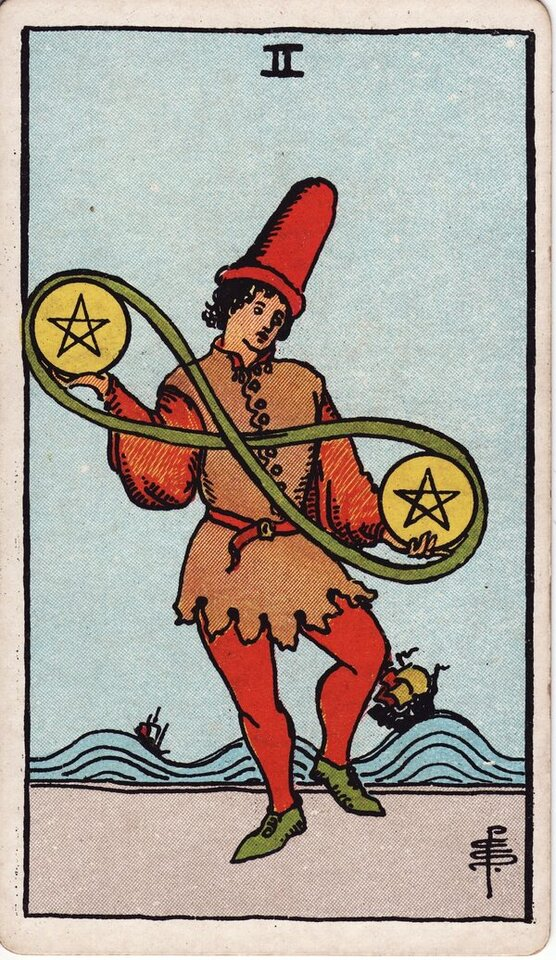
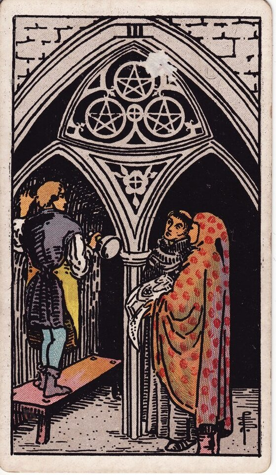
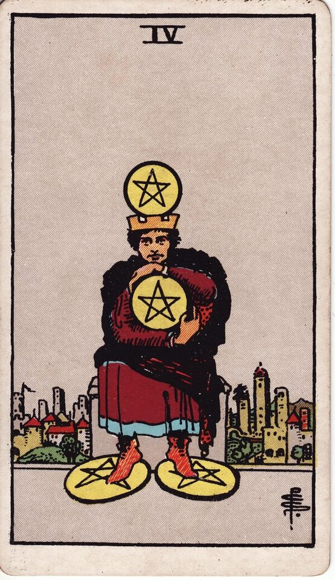
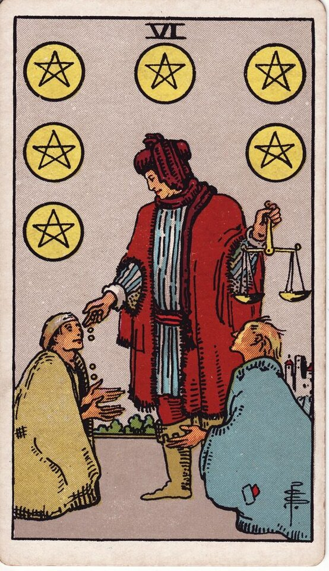
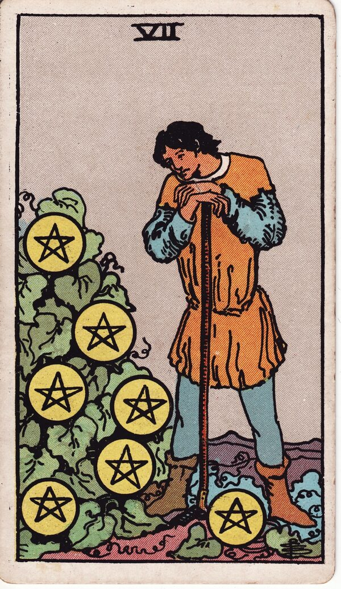
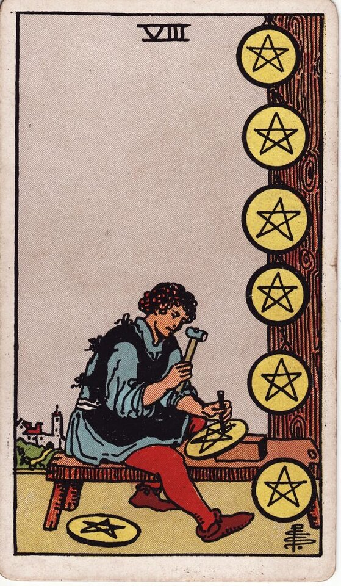
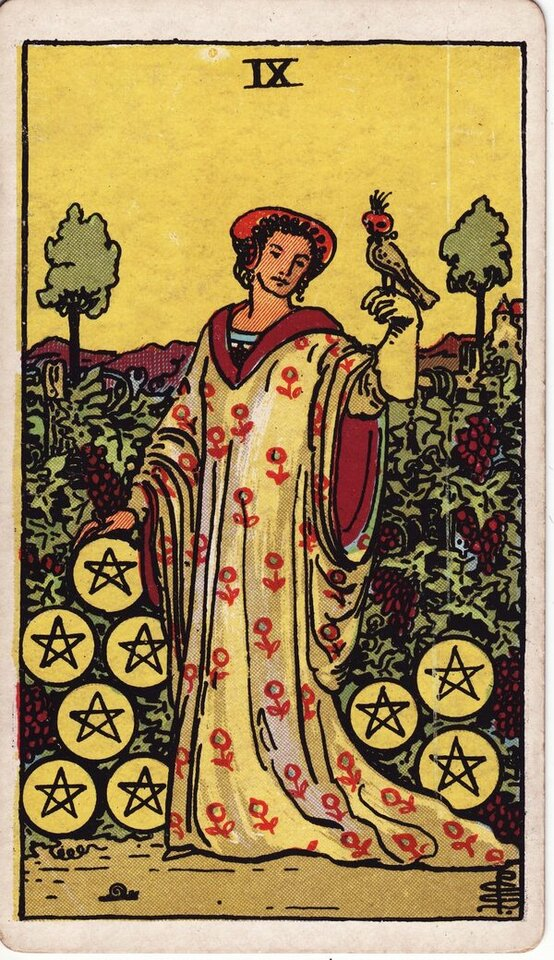
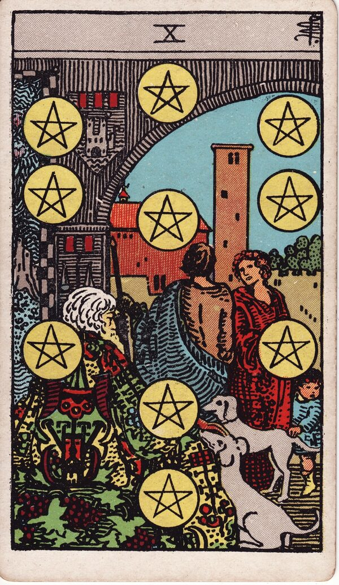
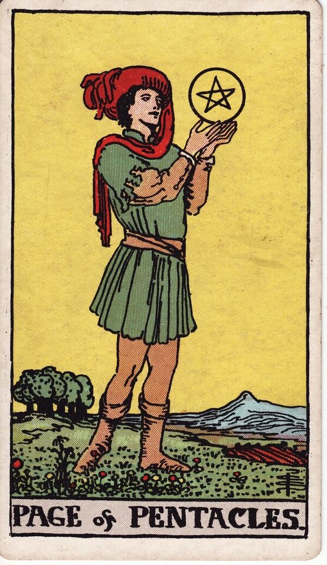
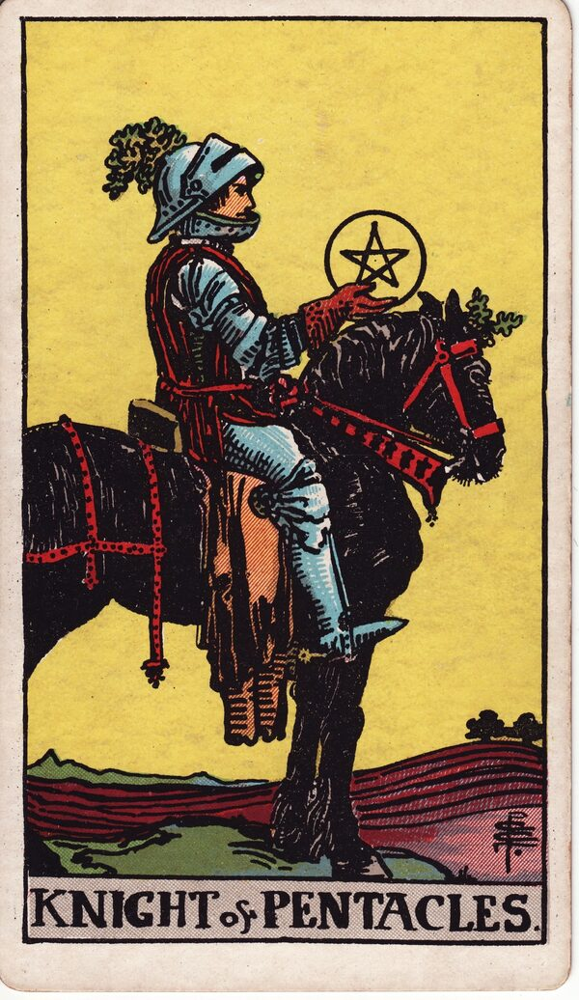

Minor Arcana · Suit of Pentacles
Suit of Pentacles Tarot Card Meanings
The Suit of Pentacles is earth - money, work, home, and the material world. Want to know what your Pentacles cards mean for your situation? Every reader on our line is hand-vetted - connect in under 60 seconds, $1 for your first minute, hang up anytime.
- Hand-vetted readers
- Available 24/7
- Hang up anytime

What the Suit of Pentacles Represents
Pentacles carry the element of earth: money, work, career, home, health, and the material world. This is the suit of the tangible - resources, security, effort over time, and the practical foundations of life. When Pentacles appear, the reading is about the concrete: a job, finances, a home, your body, or the slow, real work of building something that lasts.
When the Suit of Pentacles Dominates a Reading
A spread heavy with Pentacles tells you the matter is practical and material - money, work, stability, and physical reality are central. It can show prosperity and solid foundations, or it can flag insecurity, overwork, or priorities out of balance. Pentacles ask you to look at the real-world structure of the situation.
Suit of Pentacles - All 14 Card Meanings
Tap any card for its full meaning - upright, reversed, love, career, timing, combinations, and advice with examples:
Ace of Pentacles
A new material opportunity - money, a job, or a tangible fresh start.
Meaning →
Two of Pentacles
Juggling priorities and resources - adaptability and balance.
Meaning →
Three of Pentacles
Collaboration, skill, and recognition for quality work.
Meaning →
Four of Pentacles
Holding on tightly - security, control, or fear of loss.
Meaning →
Five of Pentacles
Hardship, scarcity, or feeling left out in the cold - help is near if you look.
Meaning →
Six of Pentacles
Generosity and exchange - giving, receiving, and balance of resources.
Meaning →
Seven of Pentacles
Patience and assessment - waiting on long-term effort to pay off.
Meaning →
Eight of Pentacles
Diligent skill-building, craftsmanship, and devoted work.
Meaning →
Nine of Pentacles
Self-made comfort, independence, and earned abundance.
Meaning →
Ten of Pentacles
Lasting wealth, family, legacy, and long-term security.
Meaning →
Page of Pentacles
A studious learner - a new opportunity, plan, or financial message.
Meaning →
Knight of Pentacles
Reliable, methodical effort - steady, dependable progress.
Meaning →
Queen of Pentacles
Practical, nurturing abundance - grounded care for home and resources.
Meaning →
King of Pentacles
Material mastery - successful, secure, generous provider and leader.
Meaning →
Pentacles Reversed - In Brief
Reversed Pentacles generally show material or financial instability: loss, insecurity, overwork, greed, blocked resources, or priorities misplaced toward (or away from) money and security. The exact card, position, and surrounding cards tell a reader which.
Pentacles in a Tarot Reading
Card meanings are the map; a live reader applies them to your actual question - which Pentacles, in which positions, beside which suits. See all four suits on the Minor Arcana meanings hub, the big themes on the Major Arcana meanings page, or take it into a money & prosperity reading or full phone tarot reading.
← Swords · Back to: All Minor Arcana →
What Do Your Pentacles Cards Mean for You?
A meanings list is the map; a live reading is the territory. We'll connect you with the right hand-vetted tarot reader in under 60 seconds. $1/min first call · 15 minutes for $10 · hang up anytime · 100% satisfaction promise.
Call (888) 920-6662 NowSuit of Pentacles - Frequently Asked Questions
What does the Suit of Pentacles represent?
Earth - money, work, career, home, health, and the material world.
What if my reading is mostly Pentacles?
The matter is practical and material - money, work, stability, and real-world foundations.
What do Pentacles mean reversed?
Material or financial instability - loss, insecurity, overwork, or misplaced priorities.
Which element is Pentacles?
Earth - the realm of the tangible, security, and effort over time.
Get Your Tarot Reading Now
Connected to a hand-vetted reader in under 60 seconds, the cards pulled on your real question, and you hang up with clarity.
Call (888) 920-6662